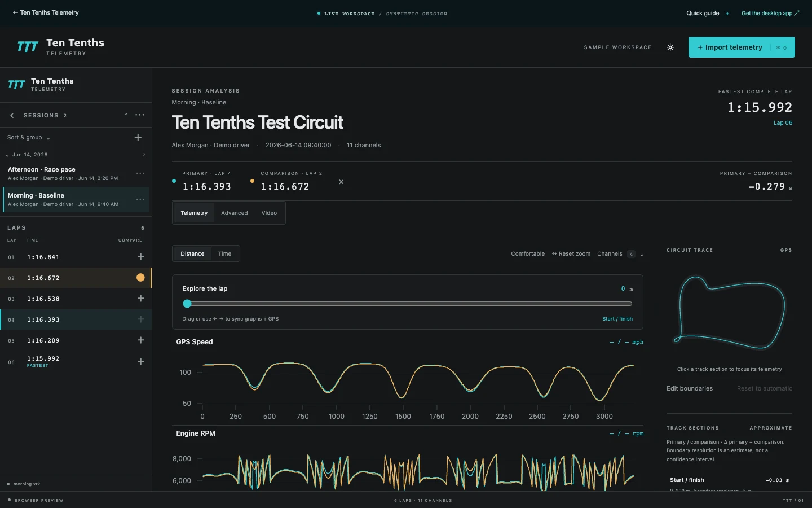

Read the data.Find the tenth.
Your laps have more to tell you. Bring telemetry, racing lines and onboard video into one focused workspace. See where the difference begins.
The whole lap.
A clearer picture.
Speed. Line. Timing. See the connections that turn a lap time into something you can act on.

Make the difference visible.
Overlay laps by distance or time. Scrub the traces and follow the synchronized cursor through the track.
Look beyond the stopwatch.
Explore corner segments, G-G traction, channel distributions and shift recovery in the same workspace.
Put the data in context.
Bring local onboard video alongside your telemetry. See the driving behind every change in the trace.
From raw data
to better decisions.
Less time organizing files. More time understanding the next lap.
Import your session.
Open an AiM XRK recording. Your original files stay where they are.
Find the difference.
Select laps and connect the dots between speed, line, delta and video.
Make the next lap count.
Take a specific insight back to the track, not just a number.
Your data.
A focused debrief.
Find a place to start with AI-powered driving analysis, in development.
The desktop coach preview connects driving observations to telemetry evidence, helping you explore the corners and channels behind an opportunity.
Explore the desktop workspace ↗Desktop coach is in development and is not included in the linked releases. The browser demo uses synthetic data and does not run an AI model.Less watching.
More exploring.
This is the actual analysis workspace, running in your browser. Select a lap. Scrub a trace. Find the connection.
Open in a full page ↗- 01Pick your comparison
Switch between sample sessions and laps.
- 02Follow the signal
Explore linked channels and GPS positions.
- 03Change your perspective
Try telemetry, advanced analysis and sample video sync.
Your next tenth
starts here.
Download Ten Tenths Telemetry and give your laps a closer look.
macOS
Built for Apple Silicon. Just download, drag into Applications and start analyzing.
Windows beta notice. The installer is unsigned. Physical Windows 10/11 testing, mixed-DPI behavior and large private XRK performance remain unverified. WebView2 is required; setup needs internet to install it if missing. Windows N requires Media Feature Pack.
macOS first-launch notice. The current app isn't Apple-notarized, so Gatekeeper may ask you to approve it under System Settings → Privacy & Security → Open Anyway. Only open software you trust.